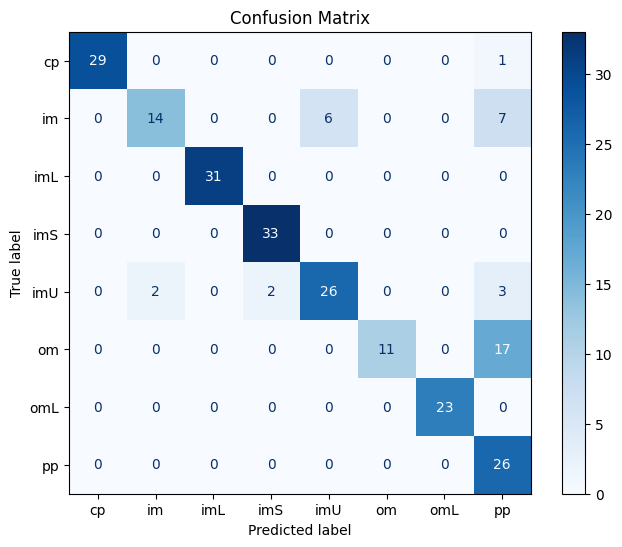
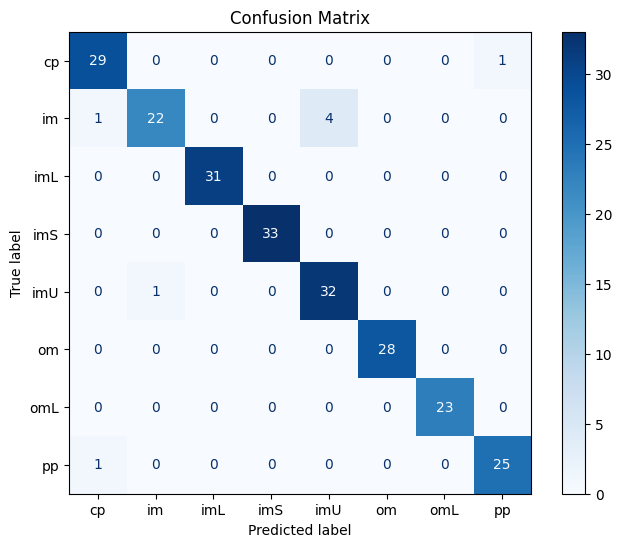

Klasifikasi Data ADASYN#
Import Library#
import pandas as pd
import numpy as np
from sklearn.naive_bayes import GaussianNB
from sklearn.ensemble import RandomForestClassifier
from sklearn.ensemble import BaggingClassifier
from sklearn.model_selection import train_test_split
from sklearn.metrics import accuracy_score, classification_report
from sklearn.tree import DecisionTreeClassifier
import matplotlib.pyplot as plt
from sklearn.metrics import ConfusionMatrixDisplay, confusion_matrix
Membagi data train dan test#
ecoli_adasyn = pd.read_csv("../dataset/ecoli_adasyn.csv")
ecoli_adasyn
| Unnamed: 0 | mcg | gvh | lip | chg | aac | alm1 | alm2 | class | |
|---|---|---|---|---|---|---|---|---|---|
| 0 | 0 | 0.490000 | 0.290000 | 0.48 | 0.5 | 0.560000 | 0.240000 | 0.350000 | cp |
| 1 | 1 | 0.070000 | 0.400000 | 0.48 | 0.5 | 0.540000 | 0.350000 | 0.440000 | cp |
| 2 | 2 | 0.560000 | 0.400000 | 0.48 | 0.5 | 0.490000 | 0.370000 | 0.460000 | cp |
| 3 | 3 | 0.590000 | 0.490000 | 0.48 | 0.5 | 0.520000 | 0.450000 | 0.360000 | cp |
| 4 | 4 | 0.230000 | 0.320000 | 0.48 | 0.5 | 0.550000 | 0.250000 | 0.350000 | cp |
| ... | ... | ... | ... | ... | ... | ... | ... | ... | ... |
| 1150 | 1150 | 0.441816 | 0.414967 | 0.48 | 0.5 | 0.543392 | 0.628315 | 0.593501 | im |
| 1151 | 1151 | 0.576171 | 0.463972 | 0.48 | 0.5 | 0.447617 | 0.794114 | 0.791079 | im |
| 1152 | 1152 | 0.270352 | 0.500191 | 0.48 | 0.5 | 0.249075 | 0.490543 | 0.440764 | im |
| 1153 | 1153 | 0.497654 | 0.438041 | 0.48 | 0.5 | 0.536014 | 0.786720 | 0.801800 | im |
| 1154 | 1154 | 0.203078 | 0.495069 | 0.48 | 0.5 | 0.448866 | 0.725764 | 0.341805 | im |
1155 rows × 9 columns
Fitur Dan Target#
Fitur:
mcg
gvh
lip
chg
chg
aac
alm1
alm2
Target:
class
fitur = ["mcg", "gvh", "lip", "chg", "aac", "alm1", "alm2"]
target = ["class"]
Pemisahan Data#
data training: 80%
data test: 20%
X = ecoli_adasyn[fitur]
y = ecoli_adasyn[target]
X_train, X_test, y_train, y_test = train_test_split(X, y, test_size=0.2, random_state=42)
data_train = X_train.merge(y_train, left_index=True, right_index=True)
data_train
| mcg | gvh | lip | chg | aac | alm1 | alm2 | class | |
|---|---|---|---|---|---|---|---|---|
| 996 | 0.710212 | 0.667868 | 0.48 | 0.5 | 0.566808 | 0.516596 | 0.389152 | pp |
| 58 | 0.440000 | 0.340000 | 0.48 | 0.5 | 0.300000 | 0.330000 | 0.430000 | cp |
| 333 | 0.610000 | 0.600000 | 0.48 | 0.5 | 0.440000 | 0.390000 | 0.380000 | pp |
| 332 | 0.710000 | 0.570000 | 0.48 | 0.5 | 0.480000 | 0.350000 | 0.320000 | pp |
| 837 | 0.603369 | 0.620368 | 0.48 | 0.5 | 0.732052 | 0.343737 | 0.346999 | om |
| ... | ... | ... | ... | ... | ... | ... | ... | ... |
| 1044 | 0.658106 | 0.684141 | 0.48 | 0.5 | 0.440177 | 0.426212 | 0.278459 | pp |
| 1095 | 0.531602 | 0.510996 | 0.48 | 0.5 | 0.492382 | 0.823809 | 0.842207 | im |
| 1130 | 0.562731 | 0.439297 | 0.48 | 0.5 | 0.560000 | 0.844096 | 0.818635 | im |
| 860 | 0.703611 | 0.628565 | 0.48 | 0.5 | 0.783611 | 0.430833 | 0.230417 | om |
| 1126 | 0.296803 | 0.452992 | 0.48 | 0.5 | 0.667479 | 0.650000 | 0.690000 | im |
924 rows × 8 columns
data_test = X_test.merge(y_test, left_index=True, right_index=True)
data_test
| mcg | gvh | lip | chg | aac | alm1 | alm2 | class | |
|---|---|---|---|---|---|---|---|---|
| 964 | 0.627443 | 0.508190 | 0.735295 | 0.500000 | 0.529457 | 0.648914 | 0.678914 | imU |
| 265 | 0.730000 | 0.840000 | 0.480000 | 0.500000 | 0.860000 | 0.580000 | 0.290000 | om |
| 109 | 0.470000 | 0.280000 | 0.480000 | 0.500000 | 0.560000 | 0.200000 | 0.250000 | cp |
| 299 | 0.680000 | 0.820000 | 0.480000 | 0.500000 | 0.380000 | 0.650000 | 0.560000 | pp |
| 844 | 0.624848 | 0.536366 | 0.569298 | 0.500000 | 0.786565 | 0.474042 | 0.321214 | om |
| ... | ... | ... | ... | ... | ... | ... | ... | ... |
| 1140 | 0.310000 | 0.464936 | 0.480000 | 0.500000 | 0.529092 | 0.810780 | 0.832468 | im |
| 850 | 0.649982 | 0.790758 | 0.800073 | 0.500000 | 0.804603 | 0.586155 | 0.431571 | om |
| 514 | 0.810342 | 0.522789 | 0.480000 | 0.500000 | 0.531803 | 0.563264 | 0.429316 | imS |
| 380 | 0.728877 | 0.482405 | 1.000000 | 0.788766 | 0.446471 | 0.617864 | 0.528132 | imL |
| 946 | 0.530270 | 0.411784 | 0.480000 | 0.500000 | 0.282487 | 0.589325 | 0.504811 | imU |
231 rows × 8 columns
Klasifikasi menggunakan Naive Bayes#
naive_bayes_model = GaussianNB()
naive_bayes_model.fit(X_train, y_train)
y_pred = naive_bayes_model.predict(X_test)
akurasi = accuracy_score(y_test, y_pred)
laporan_klasifikasi = classification_report(y_test, y_pred, zero_division=0)
print(f"Akurasi Model Naive Bayes: {akurasi:.2f}")
print("\nLaporan Klasifikasi:")
print(laporan_klasifikasi)
Akurasi Model Naive Bayes: 0.84
Laporan Klasifikasi:
precision recall f1-score support
cp 1.00 0.97 0.98 30
im 0.88 0.52 0.65 27
imL 1.00 1.00 1.00 31
imS 0.94 1.00 0.97 33
imU 0.81 0.79 0.80 33
om 1.00 0.39 0.56 28
omL 1.00 1.00 1.00 23
pp 0.48 1.00 0.65 26
accuracy 0.84 231
macro avg 0.89 0.83 0.83 231
weighted avg 0.89 0.84 0.83 231
C:\Python312\Lib\site-packages\sklearn\utils\validation.py:1339: DataConversionWarning: A column-vector y was passed when a 1d array was expected. Please change the shape of y to (n_samples, ), for example using ravel().
y = column_or_1d(y, warn=True)
cm = confusion_matrix(y_test, y_pred)
disp = ConfusionMatrixDisplay(confusion_matrix=cm,
display_labels=naive_bayes_model.classes_)
fig, ax = plt.subplots(figsize=(8, 6))
disp.plot(cmap=plt.cm.Blues, ax=ax)
plt.title('Confusion Matrix')
plt.show()

Klasifikasi dengan RandomForest#
random_forest_model = RandomForestClassifier(random_state=42)
random_forest_model.fit(X_train, y_train)
y_pred_random_forest = random_forest_model.predict(X_test)
akurasi_random_forest = accuracy_score(y_test, y_pred_random_forest)
laporan_random_forest = classification_report(y_test, y_pred_random_forest, zero_division=0)
print(f"Akurasi: {akurasi_random_forest:.2f}")
print("Laporan random forest: \n", laporan_random_forest)
C:\Python312\Lib\site-packages\sklearn\base.py:1473: DataConversionWarning: A column-vector y was passed when a 1d array was expected. Please change the shape of y to (n_samples,), for example using ravel().
return fit_method(estimator, *args, **kwargs)
Akurasi: 0.97
Laporan random forest:
precision recall f1-score support
cp 0.94 0.97 0.95 30
im 0.96 0.81 0.88 27
imL 1.00 1.00 1.00 31
imS 1.00 1.00 1.00 33
imU 0.89 0.97 0.93 33
om 1.00 1.00 1.00 28
omL 1.00 1.00 1.00 23
pp 0.96 0.96 0.96 26
accuracy 0.97 231
macro avg 0.97 0.96 0.96 231
weighted avg 0.97 0.97 0.96 231
cm = confusion_matrix(y_test, y_pred_random_forest)
disp = ConfusionMatrixDisplay(confusion_matrix=cm,
display_labels=random_forest_model.classes_)
fig, ax = plt.subplots(figsize=(8, 6))
disp.plot(cmap=plt.cm.Blues, ax=ax)
plt.title('Confusion Matrix')
plt.show()

Bagging dengan Naive Bayes estimator#
bagging_nb = BaggingClassifier(n_estimators=100, estimator=GaussianNB(), random_state=42)
bagging_nb.fit(X_train, y_train)
y_pred_bagging_nb = bagging_nb.predict(X_test)
akurasi_bagging_nb = accuracy_score(y_test, y_pred_bagging_nb)
laporan_bagging_nb = classification_report(y_test, y_pred_bagging_nb, zero_division=0)
print(f"Akurasi: {akurasi_bagging_nb:.2f}")
print("Laporan bagging NB: \n", laporan_bagging_nb)
C:\Python312\Lib\site-packages\sklearn\ensemble\_bagging.py:888: DataConversionWarning: A column-vector y was passed when a 1d array was expected. Please change the shape of y to (n_samples, ), for example using ravel().
y = column_or_1d(y, warn=True)
Akurasi: 0.84
Laporan bagging NB:
precision recall f1-score support
cp 1.00 0.97 0.98 30
im 0.88 0.52 0.65 27
imL 1.00 1.00 1.00 31
imS 0.94 1.00 0.97 33
imU 0.81 0.79 0.80 33
om 1.00 0.43 0.60 28
omL 1.00 1.00 1.00 23
pp 0.49 1.00 0.66 26
accuracy 0.84 231
macro avg 0.89 0.84 0.83 231
weighted avg 0.89 0.84 0.84 231
cm = confusion_matrix(y_test, y_pred)
disp = ConfusionMatrixDisplay(confusion_matrix=cm,
display_labels=bagging_nb.classes_)
fig, ax = plt.subplots(figsize=(8, 6))
disp.plot(cmap=plt.cm.Blues, ax=ax)
plt.title('Confusion Matrix')
plt.show()
Bagging menggunakan DecissionTree estimator#
bagging_dt = BaggingClassifier(n_estimators=100, estimator=DecisionTreeClassifier(), random_state=42)
bagging_dt.fit(X_train, y_train)
y_pred_bagging_dt = bagging_dt.predict(X_test)
akurasi_bagging_dt = accuracy_score(y_test, y_pred_bagging_dt)
laporan_bagging_dt = classification_report(y_test, y_pred_bagging_dt)
print(f"Akurasi: {akurasi_bagging_dt:.2f}")
print("Laporan random forest: \n", laporan_bagging_dt)
C:\Python312\Lib\site-packages\sklearn\ensemble\_bagging.py:888: DataConversionWarning: A column-vector y was passed when a 1d array was expected. Please change the shape of y to (n_samples, ), for example using ravel().
y = column_or_1d(y, warn=True)
Akurasi: 0.95
Laporan random forest:
precision recall f1-score support
cp 0.94 0.97 0.95 30
im 0.85 0.85 0.85 27
imL 1.00 1.00 1.00 31
imS 0.97 1.00 0.99 33
imU 0.90 0.85 0.88 33
om 1.00 0.96 0.98 28
omL 0.96 1.00 0.98 23
pp 0.96 0.96 0.96 26
accuracy 0.95 231
macro avg 0.95 0.95 0.95 231
weighted avg 0.95 0.95 0.95 231
cm = confusion_matrix(y_test, y_pred)
disp = ConfusionMatrixDisplay(confusion_matrix=cm,
display_labels=bagging_dt.classes_)
fig, ax = plt.subplots(figsize=(8, 6))
disp.plot(cmap=plt.cm.Blues, ax=ax)
plt.title('Confusion Matrix')
plt.show()
Table Perbandingan Model#
akurasi_table = pd.DataFrame(
[
["Naive Bayes", akurasi],
["Random Forest", akurasi_random_forest],
["Bagging Naive Bayes", akurasi_bagging_nb],
["Bagging Decission Tree", akurasi_bagging_dt]
],
columns=["Model", "Akurasi Model"],
index=None
)
akurasi_table.style.hide(axis="index").format({
"Akurasi Model": "{:.3f}"
})
| Model | Akurasi Model |
|---|---|
| Naive Bayes | 0.835 |
| Random Forest | 0.965 |
| Bagging Naive Bayes | 0.840 |
| Bagging Decission Tree | 0.948 |